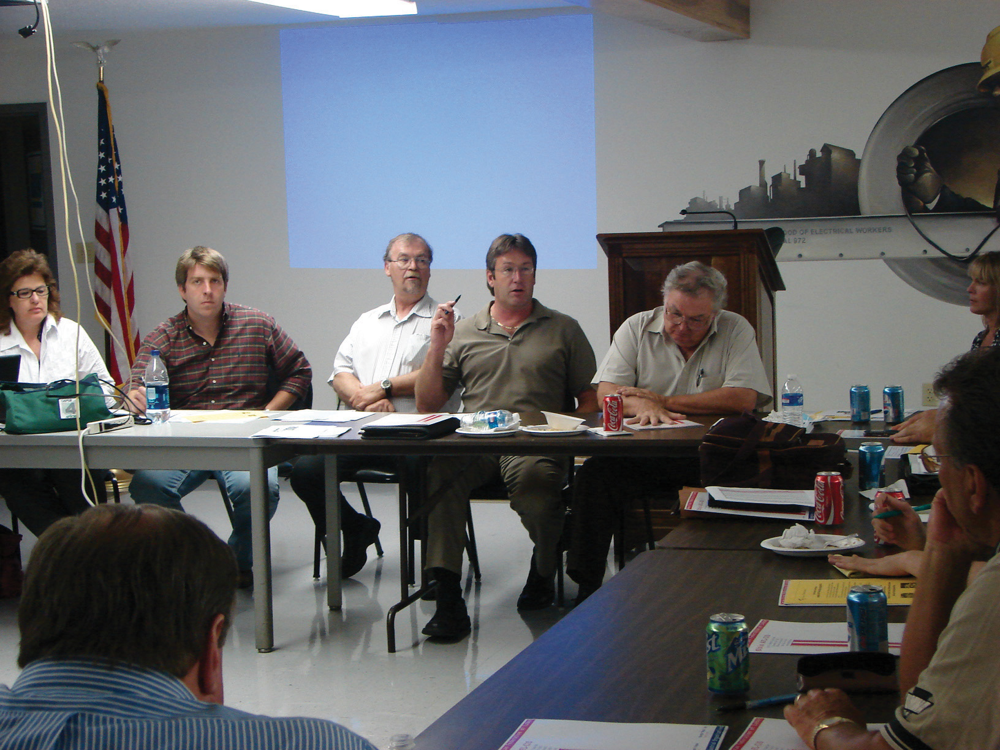

After reading this section, you should be able to answer the following questions:
Political scientist Harold Lasswell once noted, “The open interplay of opinion and policy is the distinguishing mark of popular rule.”Harold D. Lasswell, Democracy through Public Opinion (Menasha, WI: George Banta Publishing Company, 1941), 15. Public opinion plays a number of important roles in a representative democracy. Leaders can take public opinion into account when making laws and formulating policy. Public opinion can act as a check on leadership, as the members of the public can express their dissatisfaction with politicians who refuse to take their opinions into account and vote them out of office.
One purpose of public opinion in a democracy is to inform public policymaking. Opinion polls provide a mechanism for succinctly presenting the views of the mass public to government leaders who are making decisions that will affect society. Leaders often monitor the public pulse when making policy decisions, especially when they face an election campaign.
Perspectives about the relationship of public opinion to policymaking differ vastly. On the one hand, scholars and political practitioners believe that public policy should be guided by public opinion so that the will of the people is respected. Public opinion polls are essential to ensuring democratic governance. Political scientist Sidney Verba supports this view: “Surveys produce just what democracy is supposed to produce—equal representation of all citizens. The sample survey is rigorously egalitarian; it is designed so that each citizen has an equal chance to participate and an equal voice when participating.”As cited in Scott Keeter, “Public Opinion Polling and Its Problems,” in Political Polling in the Digital Age, ed. Kirby Goidel (Baton Rouge: Louisiana State University Press, 2011), 28. From this perspective, members of Congress, state legislators, and local officials should pay close attention to the public’s views when making laws.
Others disagree with the notion that leaders should pay close attention to public opinion when making decisions. They point out that many members of the public are uniformed about issues, and the opinions they record on polls are not carefully reasoned. Journalist and scholar Walter Lippmann noted that governing by popularity is not always best. Instead, public policy should be grounded in sound principles supported by experts; decision making should not simply be the result of popular will. This view is consistent with the belief that the country is being run by pollsters and their followers and not by leaders with integrity and principle. As an editorial in the Wall Street Journal lamented, “Spend too much time following polls and you simply forget how to lead, especially when it matters.”Kenneth F. Warren, In Defense of Public Opinion Polling (Boulder, CO: Westview Press, 2004), 6.
Some scholars take issue with Verba’s assessment of the egalitarian nature of polls in democracy and argue that minority opinion is not given sufficient weight. Certain people, such as individuals with few economic resources, have a difficult time getting their views recognized. Pollsters may not reach these people because they do not have regular telephone or Internet service, or they do not have the time or inclination to answer questionnaires.
Public opinion, especially as measured by polls, is a quick take on the public pulse. It often does not require that members of the public have much knowledge about politicians, government, or policies; they merely must be willing to state whatever views pop into their heads. Public opinion polls often deal with issues and abstract ideas that people have not thought much about.
Public judgmentA type of public opinion where people carefully consider the range of viewpoints and policy consequences of issues., in contrast, is a special type of public opinion where people carefully consider the important issues of the day, contemplate the range of viewpoints, and weigh the consequences of policy prescriptions. Rather than stating positions off the top of their heads, public judgment requires people to be knowledgeable about an issue and debate the merits of policies before arriving at an informed opinion. For example, public opinion polls conducted by the Pew Research Center in 2011 indicate that the public favors tougher immigration laws and better enforcement of border security. However, when people exercise public judgment and consider the consequences of immigration policy, such as the moral issues related to the welfare of children of illegal immigrants, they support more generous policies.Daniel Yankelovich, Coming to Public Judgment (Syracuse, NY: Syracuse University Press, 1991). Public judgment is not easily achieved, but it offers an important counterbalance to the domination of elite opinion in the policy sphere.
Deliberative pollingA technique that brings people together to discuss issues with experts and other citizens in order to arrive at more informed opinions. is a technique that provides members of the public with the opportunity to think carefully about issues and their relationship to public policy. It attempts to deal with the fact that many people know little about issues because they lack the time to acquire information. Deliberative polling was pioneered in 1988 and has been used around the world to gauge opinion. The Center for Deliberative Democracy at Stanford University applies and studies the use of deliberative polling.
Figure 7.3 Deliberative Polling
Deliberative polling brings people together to discuss issues in detail with policy experts so that they can develop informed choices.
Source: Photo courtesy of Bernard Pollack, http://www.flickr.com/photos/labor2008/2587616688/.
A random, representative sample of people is first polled about their positions on targeted issues. They are then brought together for a few days to discuss a particular issue in detail. The participants are provided with briefing materials, engage in a dialogue with experts on specific topics, and discuss their views in small groups led by trained moderators. The deliberations are shared with the general public through television broadcasts. The participants are polled again after they have deliberated to determine if their opinions have changed. Scholars believe that deliberative polls represent the opinions the public would hold on issues if they had the opportunity to exercise public judgment and carefully consider their options. After deliberating on an issue, members of the public frequently shift positions.James S. Fishkin, When the People Speak (New York: Oxford University Press, 2009). For example, people participating in a deliberative polling experiment in Texas shifted their views on the use of wind power from 54 percent to 84 percent in favor. As a result, political leaders heeded the views of Texas’s population, and the state went from last to first in the use of wind power.Joe Klein, “How Can a Democracy Solve Tough Problems?,” Time, September 2, 2010, accessed June 6, 2011, http://www.time.com/time/politics/article/0,8599,2015481,00.html.
Political scientist James Fishkin, who pioneered deliberative polling, observes, “The Public is very smart if you give it a chance. If people think their voice actually matters, they’ll do the hard work, really study their briefing books, ask the experts smart questions and then make tough decisions.”
Public opinion is important in a democracy, as it can guide policy decisions. There is disagreement about the extent to which political leaders should take the public’s views into account compared with the advice of experts. Many people do not have a good understanding about issues and related policies. Deliberative polling is an attempt to give people the opportunity to become more informed about issues and to contemplate policy options.